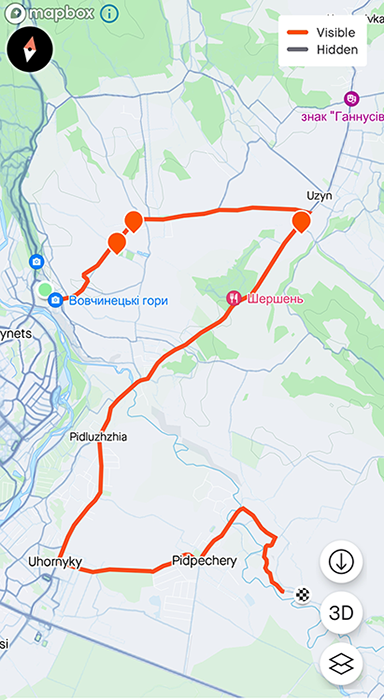

Головна сторінка
Вовчинець
Місце відпочинку
Підпечерська печера

Разом з хлопцями проїхали близько 18.5 км.
Це було надзвичайно весело та досить важко.
Максимальний підйом - 309 метрів, дорога стрімка,
як вгору, так і вниз. Ми осягли максимальну швидкість
понад 49 км/год.